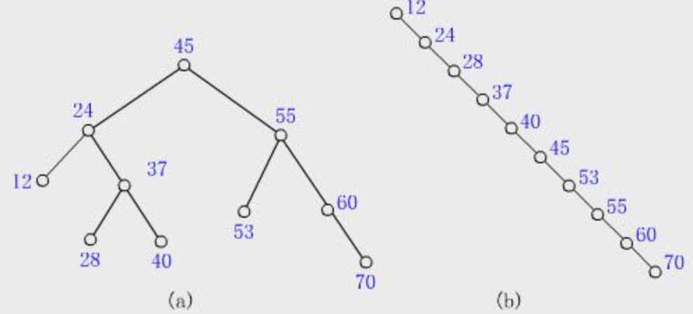

2023-02-20
树
大致可以分为二叉树和多叉树
- 普通二叉树
- 每个父节点最多有两个子树节点
- 满二叉树
- 除最后一层, 其他节点都有左子树和右子树; 也可以说叶子节点只出现在最后一层
- 完全二叉树
相对于满二叉树, 最后一层的节点可以是不满的; 叶子节点出现在最后一层或者倒数第二层，不能再往上.
详细点说:
- 所有叶子节点必须集中在最左边
- 任何一个节点不能只有左子树没有右子树(注意不是左叶子节点)
- 叶子节点出现在最后一层或者倒数第二层
- 二叉查找树/二叉排序树
要求 查找的数据必须是有序的。 每次查找、操作时都要维护一个有序的数据集，于是有了二叉查找树这个概念。
二叉查找树中，对于每一个节点, 左子树都比节点小，右子树都比节点大
- 若左子树不空，则左子树上所有结点的值均小于它的根结点的值；
- 若右子树不空，则右子树上所有结点的值均大于或等于它的根结点的值；
- 左、右子树也分别为二叉排序树。
- 平衡二叉树/AVL树/红黑树
上面的 二叉查找树/二叉排序树 进行数据的添加的时候, 若原来的数据本来就是有序的, 很可能造成最终结果成为一个链表, 如b:
所以引入了平衡的概念,, 自动调整树的高度, 尽量保证两边平衡
- 平衡二叉树要么是一棵空树
- 要么保证左右子树的高度之差不大于 1
- 子树也必须是一颗平衡二叉树
- B树
平衡二叉树/AVL树/红黑树 的升级版
每个节点可以有多个自排序的值, 和其对应的数据
以Mysql索引举例,
- 每个节点的每一个索引值, 都会全部保存当前对应的行数据;
- 节点的数据索引从左到右依次递增
- 节点索引不重复
- 叶节点有相同深度
- 叶子节点间无指针
- B+树
B树 的优化, 每个节点可以有多个自排序的值, 且只有叶子节点才保存数据
以Mysql索引举例,
- 每个节点的每一个索引值, 只有到达叶子节点时候, 才会有当前对应的行数据 (非叶子节点不存储data, 只放索引, 可以放更多的索引)
- 索引值可重复, 但是行数据只有叶子节点才有
- 叶子节点包含所有索引
- 叶子节点间用指针相邻连接(提高区间访问性能)